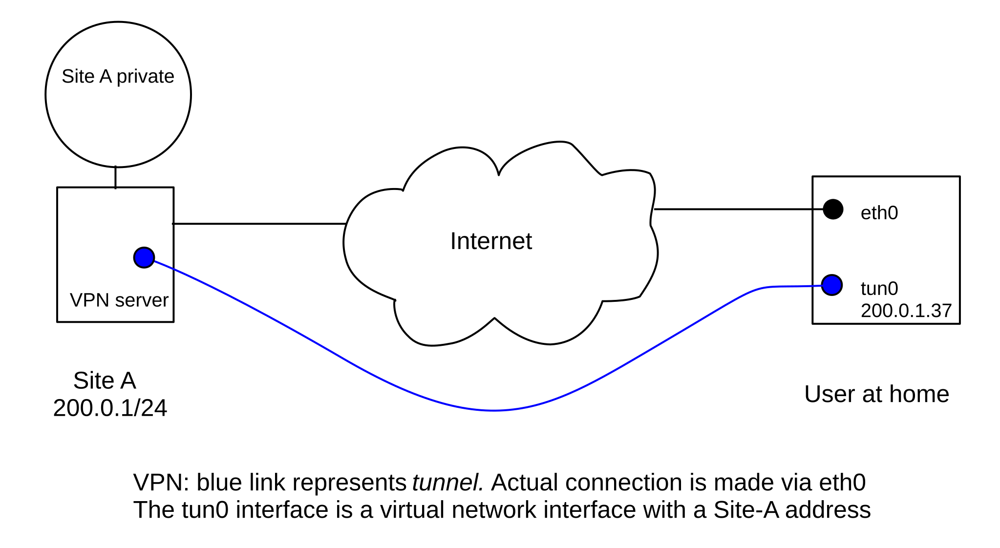
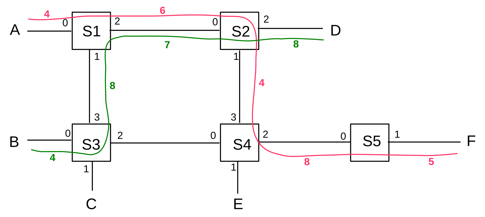

5 Other LANs¶
In the wired era, one could get along quite well with nothing but Ethernet and the occasional long-haul point-to-point link joining different sites. However, there are important wired alternatives out there. Some, like token ring, are mostly of historical importance; others, like virtual circuits, are of great conceptual importance but – so far – of relatively modest day-to-day significance (though see MPLS, 25.12 Multi-Protocol Label Switching (MPLS)).
5.1 Virtual Private Networks¶
Suppose you want to connect to your workplace network from home. Your workplace, however, has a security policy that does not allow “outside” IP addresses to access essential internal resources. How do you proceed, without leasing a dedicated telecommunications line to your workplace?
A virtual private network, or VPN, provides a solution; it supports creation of virtual links that join far-flung nodes via the Internet. Your home computer creates an ordinary Internet connection (TCP or UDP) to a workplace VPN server (IP-layer packet encapsulation can also be used, and avoids the timeout problems sometimes created by sending TCP packets within another TCP stream; see 9.9 Mobile IP). Each end of the connection is typically associated with a software-created virtual network interface; each of the two virtual interfaces is assigned an IP address. (Virtual interfaces are not essential; VPNs created with IPsec, 29.6 IPsec, generally omit them.) When a packet is to be sent along the virtual link, it is actually encapsulated and sent along the original Internet connection to the VPN server, wending its way through the commodity Internet; this process is called tunneling. To all intents and purposes, the virtual link behaves like any other physical link.
Tunneled packets are often encrypted as well as encapsulated, though that is a separate issue. One relatively easy-to-implement example of a tunneling mechanism is to treat a TCP home-workplace connection as a serial line and send packets over it back-to-back, using PPP with HDLC; see 6.1.5.1 HDLC and RFC 1661 (though this can lead to the above-mentioned TCP-in-TCP timeout problems).
At the workplace side, the virtual network interface in the VPN server is attached to a router or switch; at the home user’s end, the virtual network interface can now be assigned an internal workplace IP address. The home computer is now, for all intents and purposes, part of the internal workplace network.
In the diagram below, the user’s regular Internet connection is via hardware interface eth0. A connection is established to Site A’s VPN server; a virtual interface tun0 is created on the user’s machine which appears to be a direct link to the VPN server. The tun0 interface is assigned a Site-A IP address. Packets sent via the tun0 interface in fact travel over the original connection via eth0 and the Internet.

After the VPN is set up, the home host’s tun0 interface appears to be locally connected to Site A, and thus the home host is allowed to connect to the private area within Site A. The home host’s forwarding table will be configured so that traffic to Site A’s private addresses is routed via interface tun0.
VPNs are also commonly used to connect entire remote offices to headquarters. In this case the remote-office end of the tunnel will be at that office’s local router, and the tunnel will carry traffic for all the workstations in the remote office.
Other applications of VPNs include trying to appear geographically to be at another location, and bypassing firewall rules blocking specific TCP or UDP ports.
To improve security, it is common for the residential (or remote-office) end of the VPN connection to use the VPN connection as the default route for all traffic except that needed to maintain the VPN itself. This may require a so-called host-specific forwarding-table entry at the residential end to allow the packets that carry the VPN tunnel traffic to be routed correctly via eth0. This routing strategy means that potential intruders cannot access the residential host – and thus the workplace internal network – through the original residential Internet access. A consequence is that if the home worker downloads a large file from a non-workplace site, it will travel first to the workplace, then back out to the Internet via the VPN connection, and finally arrive at the home.
To improve congestion response, IP packets are sometimes marked by routers that are experiencing congestion; see 21.5.3 Explicit Congestion Notification (ECN). If such marking is done to the outer, encapsulating, packet, and the marks are not transferred at the remote endpoint of the VPN to the inner, encapsulated, packet, then the marks are lost. Congestion response may suffer. RFC 6040 spells out a proper re-marking strategy in general; RFC 7296 defines re-marking for IPsec (29.6 IPsec). Older VPN protocols, however, may not support congestion re-marking.
5.2 Carrier Ethernet¶
Carrier Ethernet is a leased-line point-to-point link between two sites, where the subscriber interface at each end of the line looks like Ethernet (in some flavor). The physical path in between sites, however, need not have anything to do with Ethernet; it may be implemented however the carrier wishes. In particular, it will be (or at least appear to be) full-duplex, it will be collision-free, and its length may far exceed the maximum permitted by any IEEE Ethernet standard.
As we have seen, Ethernet itself has become a kind of generic virtual interface for a wide variety of physical implementations and speeds. Carrier Ethernet takes this view to its logical conclusion: it is Ethernet only in terms of the endpoint interfaces; the intervening network can be anything at all.
Bandwidth can be purchased in whatever increments the carrier has implemented, and uplink bandwidth can be very different from downlink. It is perfectly reasonable for the endpoint Ethernet interfaces to be much faster than the bandwidth provided, eg Gigabit Ethernet interfaces for a 40 Mbps link. The point of carrier Ethernet is to provide a layer of abstraction between the customers, who need only install a commodity Ethernet interface, and the provider, who can upgrade the link implementation at will without requiring change at the customer end.
In a sense, carrier Ethernet is similar to the widespread practice of provisioning residential DSL and cable routers with an Ethernet interface for customer interconnection; again, the actual link technologies may not look anything like Ethernet, but the interface will.
A carrier Ethernet connection looks like a virtual VPN link, but runs on top of the provider’s internal network rather than the Internet at large. Carrier Ethernet connections often provide the primary Internet connectivity for one endpoint, unlike Internet VPNs which assume both endpoints already have full Internet connectivity.
5.3 Token Ring¶
A significant part of the previous chapter was devoted to classic Ethernet’s collision mechanism for supporting shared media access. After that, it may come as a surprise that there is a simple multiple-access mechanism that is not only collision-free, but which supports fairness in the sense that if N stations wish to send then each will receive 1/N of the opportunities.
That method is Token Ring. Actual implementations come in several forms, from Fiber-Distributed Data Interface (FDDI) to so-called “IBM Token Ring”. The central idea is that stations are connected in a ring:
Packets will be transmitted in one direction (clockwise in the ring above). Stations in effect forward most packets around the ring, although they can also remove a packet. (It is perhaps more accurate to think of the forwarding as representing the default cable connectivity; non-forwarding represents the station’s momentarily breaking that connectivity.)
When the network is idle, all stations agree to forward a special, small packet known as a token. When a station, say A, wishes to transmit, it must first wait for the token to arrive at A. Instead of forwarding the token, A then transmits its own packet; this travels around the network and is then removed by A. At that point (or in some cases at the point when A finishes transmitting its data packet) A then forwards the token.
In a small ring network, the ring circumference may be a small fraction of one packet. Ring networks become “large” at the point when some packets may be entirely in transit on the ring. Slightly different solutions apply in each case. (It is also possible that the physical ring exists only within the token-ring switch, and that stations are connected to that switch using the usual point-to-point wiring.)
If all stations have packets to send, then we will have something like the following:
- A waits for the token
- A sends a packet
- A sends the token to B
- B sends a packet
- B sends the token to C
- C sends a packet
- C sends the token to D
- …
All stations get an equal number of chances to transmit, and no bandwidth is wasted on collisions. (A station constantly sending smaller packets will send the same number of packets as a station constantly sending larger packets, but the bandwidth will be smaller in proportion to the smaller packet size.)
One problem with token ring is that when stations are powered off it is essential that the packets continue forwarding; this is usually addressed by having the default circuit configuration be to keep the loop closed. Another issue is that some station has to watch out in case the token disappears, or in case a duplicate token appears.
Because of fairness and the lack of collisions, IBM Token Ring was once considered to be the premium LAN mechanism. As such, Token Ring hardware commanded a substantial price premium. But due to Ethernet’s combination of lower hardware costs and higher bitrates (even taking collisions into account), the latter eventually won out.
There was also a much earlier collision-free hybrid of 10 Mbps Ethernet and Token Ring known as Token Bus: an Ethernet physical network (often linear) was used with a token-ring-like protocol layer above that. Stations were physically connected to the (linear) Ethernet but were assigned identifiers that logically arranged them in a (virtual) ring. Each station had to wait for the token and only then could transmit a packet; after that it would send the token on to the next station in the virtual ring. As with “real” Token Ring, some mechanisms need to be in place to monitor for token loss.
Token Bus Ethernet never caught on. The additional software complexity was no doubt part of the problem, but perhaps the real issue was that it was not necessary.
5.4 Virtual Circuits¶
Before we can get to our final LAN example, ATM, we need to detour briefly through virtual circuits.
Virtual circuits are The Road Not Taken by IP.
Virtual-circuit switching (or routing) is an alternative to datagram switching, which was introduced in Chapter 1. In datagram switching, routers know the next_hop to each destination, and packets are addressed by destination. In virtual-circuit switching, routers know about end-to-end connections, and packets are “addressed” by a connection ID.
Before any data packets can be sent, a connection needs to be established first. For that connection, the route is computed and then each link along the path is assigned a connection ID, traditionally called the VCI, for Virtual Circuit Identifier. In most cases, VCIs are only locally unique; that is, the same connection may use a different VCI on each link. The lack of global uniqueness makes VCI allocation much simpler. Although the VCI keeps changing along a path, the VCI can still be thought of as identifying the connection. To send a packet, the host marks the packet with the VCI assigned to the host–router1 link.
Packets arrive at (and depart from) switches via one of several ports, which we will assume are numbered beginning at 0. Switches maintain a connection table indexed by ⟨VCI,port⟩ pairs; unlike a forwarding table, the connection table has a record of every connection through that switch at that particular moment. As a packet arrives, its inbound VCIin and inbound portin are looked up in this table; this yields an outbound ⟨VCIout,portout⟩ pair. The VCI field of the packet is then rewritten to VCIout, and the packet is sent via portout.
Note that typically there is no source address information included in the packet (although the sender can be identified from the connection, which can be identified from the VCI at any point along the connection). Packets are identified by connection, not destination. Any node along the path (including the endpoints) can in principle look up the connection and figure out the endpoints.
Note also that each switch must rewrite the VCI. Datagram switches never rewrite addresses (though they do update hopcount/TTL fields). The advantage to this rewriting is that VCIs need be unique only for a given link, greatly simplifying the naming. Datagram switches also do not make use of a packet’s arrival interface.
As an example, consider the network below. Switch ports are numbered 0,1,2,3. Two paths are drawn in, one from A to F in red and one from B to D in green; each link is labeled with its VCI number in the same color.

We will construct virtual-circuit connections between
- A and F (shown above in red)
- A and E
- A and C
- B and D (shown above in green)
- A and F again (a separate connection)
The following VCIs have been chosen for these connections. The choices are made more or less randomly here, but in accordance with the requirement that they be unique to each link. Because links are generally taken to be bidirectional, a VCI used from S1 to S3 cannot be reused from S3 to S1 until the first connection closes.
- A to F: A──4──S1──6──S2──4──S4──8──S5──5──F; this path goes from S1 to S4 via S2
- A to E: A──5──S1──6──S3──3──S4──8──E; this path goes, for no particular reason, from S1 to S4 via S3, the opposite corner of the square
- A to C: A──6──S1──7──S3──3──C
- B to D: B──4──S3──8──S1──7──S2──8──D
- A to F: A──7──S1──8──S2──5──S4──9──S5──2──F
One may verify that on any one link no two different paths use the same VCI.
We now construct the actual ⟨VCI,port⟩ tables for the switches S1-S4, from the above; the table for S5 is left as an exercise. Note that either the ⟨VCIin,portin⟩ or the ⟨VCIout,portout⟩ can be used as the key; we cannot have the same pair in both the in columns and the out columns. It may help to display the port numbers for each switch, as in the upper numbers in following diagram of the above red connection from A to F (lower numbers are the VCIs):
Switch S1:
| VCIin | portin | VCIout | portout | connection |
|---|---|---|---|---|
| 4 | 0 | 6 | 2 | A⟶F #1 |
| 5 | 0 | 6 | 1 | A⟶E |
| 6 | 0 | 7 | 1 | A⟶C |
| 8 | 1 | 7 | 2 | B⟶D |
| 7 | 0 | 8 | 2 | A⟶F #2 |
Switch S2:
| VCIin | portin | VCIout | portout | connection |
|---|---|---|---|---|
| 6 | 0 | 4 | 1 | A⟶F #1 |
| 7 | 0 | 8 | 2 | B⟶D |
| 8 | 0 | 5 | 1 | A⟶F #2 |
Switch S3:
| VCIin | portin | VCIout | portout | connection |
|---|---|---|---|---|
| 6 | 3 | 3 | 2 | A⟶E |
| 7 | 3 | 3 | 1 | A⟶C |
| 4 | 0 | 8 | 3 | B⟶D |
Switch S4:
| VCIin | portin | VCIout | portout | connection |
|---|---|---|---|---|
| 4 | 3 | 8 | 2 | A⟶F #1 |
| 3 | 0 | 8 | 1 | A⟶E |
| 5 | 3 | 9 | 2 | A⟶F #2 |
The namespace for VCIs is small, and compact (eg contiguous). Typically the VCI and port bitfields can be concatenated to produce a ⟨VCI,Port⟩ composite value small enough that it is suitable for use as an array index. VCIs work best as local identifiers. IP addresses, on the other hand, need to be globally unique, and thus are often rather sparsely distributed.
Virtual-circuit switching offers the following advantages:
- connections can get quality-of-service guarantees, because the switches are aware of connections and can reserve capacity at the time the connection is made
- headers are smaller, allowing faster throughput
- headers are small enough to allow efficient support for the very small packet sizes that are optimal for voice connections. ATM packets, for instance, have 48 bytes of data; see below.
Datagram forwarding, on the other hand, offers these advantages:
- Routers have less state information to manage.
- Router crashes and partial connection state loss are not a problem.
- If a router or link is disabled, rerouting is easy and does not affect any connection state. (As mentioned in Chapter 1, this was Paul Baran’s primary concern in his 1962 paper introducing packet switching.)
- Per-connection billing is very difficult.
The last point above may once have been quite important; in the era when the ARPANET was being developed, typical daytime long-distance rates were on the order of $1/minute. It is unlikely that early TCP/IP protocol development would have been as fertile as it was had participants needed to justify per-minute billing costs for every project.
It is certainly possible to do virtual-circuit switching with globally unique VCIs – say the concatenation of source and destination IP addresses and port numbers. The IP-based RSVP protocol (25.6 RSVP) does exactly this. However, the fast-lookup and small-header advantages of a compact namespace are then lost.
Multi-Protocol Label Switching (25.12 Multi-Protocol Label Switching (MPLS)) is another IP-based application of virtual circuits.
Note that virtual-circuit switching does not suffer from the problem of idle channels still consuming resources, which is an issue with circuits using time-division multiplexing (eg shared T1 lines)
5.5 Asynchronous Transfer Mode: ATM¶
ATM is a network mechanism intended to accommodate real-time traffic as well as bulk data transfer. We present ATM here as a LAN layer, for which it is still sometimes used, but it was originally proposed as a replacement for the IP layer as well, and, to an extent, the Transport layer. These broader plans were not greeted with universal enthusiasm within the IETF. When used as a LAN layer, IP packets are transmitted over ATM as in 5.5.1 ATM Segmentation and Reassembly.
A distinctive feature of ATM is its small packet size. ATM has its roots in the telephone industry, and was therefore particularly intended to support voice. A significant source of delay in voice traffic is the packet fill time: at DS0 speeds (64 kbps), voice data accumulates at 8 bytes/ms. If we are sending 1 kB packets, this means voice is delayed by about 1/8 second, meaning in turn that when one person stops speaking, the earliest they can hear the other’s response is 1/4 second later. Slightly smaller levels of voice delay can introduce an annoying echo. Smaller packets reduce the fill time and thus the delay: when voice is sent over IP (VoIP), one common method is to send 160 bytes every 20 ms.
ATM took this small-packet strategy even further: packets have 48 bytes of data, plus 5 bytes of header. Such small packets are often called cells. To manage such a small header, virtual-circuit routing is a necessity. IP packets of such small size would likely consume more than 50% of the bandwidth on headers, if the LAN header were included.
Aside from reduced voice fill-time, other benefits to small cells are reduced store-and-forward delay and minimal queuing delay, at least for high-priority traffic. Prioritizing traffic and giving precedence to high-priority traffic is standard, but high-priority traffic is never allowed to interrupt transmission already begun of a low-priority packet. If you have a high-priority voice cell, and someone else has a 1500-byte packet just started, your cell has to wait about 30 cell times, because 1500 bytes is about 30 cells. However, if their low-priority traffic is instead made up of 30 cells, you have only to wait for their first cell to finish; the delay is 1/30 as much.
ATM also made the decision to require fixed-size cells. The penalty for one partially used cell among many is small. Having a fixed cell size simplifies hardware design, and, in theory, allows it easier to design for parallelism.
Unfortunately, the designers of ATM also chose to mandate no cell reordering. This means cells can use a smaller sequence-number field, but also makes parallel switches much harder to build. A typical parallel switch design might involve distributing incoming cells among any of several input queues; the queues would then handle the VCI lookups in parallel and forward the cells to the appropriate output queues. With such an architecture, avoiding reordering is difficult. It is not clear to what extent the no-reordering decision was related to the later decline of ATM in the marketplace.
ATM cells have 48 bytes of data and a 5-byte header. The header contains up to 28 bits of VCI information, three “type” bits, one cell-loss priority, or CLP, bit, and an 8-bit checksum over the header only. The VCI is divided into 8-12 bits of Virtual Path Identifier and 16 bits of Virtual Channel Identifier, the latter supposedly for customer use to separate out multiple connections between two endpoints. Forwarding is by full switching only, and there is no mechanism for physical (LAN) broadcast.
5.5.1 ATM Segmentation and Reassembly¶
Due to the small packet size, ATM defines its own mechanisms for segmentation and reassembly of larger packets. Thus, individual ATM links in an IP network are quite practical. These mechanisms are called ATM Adaptation Layers, and there are four of them: AALs 1, 2, 3/4 and 5 (AAL 3 and AAL 4 were once separate layers, which merged). AALs 1 and 2 are used only for voice-type traffic; we will not consider them further.
The ATM segmentation-and-reassembly mechanism defined here is intended to apply only to large data; no cells are ever further subdivided. Furthermore, segmentation is always applied at the point where the data enters the network; reassembly is done at exit from the ATM path. IPv4 fragmentation, on the other hand, applies conceptually to IP packets, and may be performed by routers within the network.
For AAL 3/4, we first define a high-level “wrapper” for an IP packet, called the CS-PDU (Convergence Sublayer - Protocol Data Unit). This prefixes 32 bits on the front and another 32 bits (plus padding) on the rear. We then chop this into as many 44-byte chunks as are needed; each chunk goes into a 48-byte ATM payload, along with the following 32 bits worth of additional header/trailer:
- 2-bit type field:
- 10: begin new CS-PDU
- 00: continue CS-PDU
- 01: end of CS-PDU
- 11: single-segment CS-PDU
- 4-bit sequence number, 0-15, good for catching up to 15 dropped cells
- 10-bit MessageID field
- CRC-10 checksum.
We now have a total of 9 bytes of header for 44 bytes of data; this is more than 20% overhead. This did not sit well with the IP-over-ATM community (such as it was), and so AAL 5 was developed.
AAL 5 moved the checksum to the CS-PDU and increased it to 32 bits from 10 bits. The MID field was discarded, as no one used it, anyway (if you wanted to send several different types of messages, you simply created several virtual circuits). A bit from the ATM header was taken over and used to indicate:
- 1: start of new CS-PDU
- 0: continuation of an existing CS-PDU
The CS-PDU is now chopped into 48-byte chunks, which are then used as the entire body of each ATM cell. With 5 bytes of header for 48 bytes of data, overhead is down to 10%. Errors are detected by the CS-PDU CRC-32. This also detects lost cells (impossible with a per-cell CRC!), as we no longer have any cell sequence number.
For both AAL3/4 and AAL5, reassembly is simply a matter of stringing together consecutive cells in order of arrival, starting a new CS-PDU whenever the appropriate bits indicate this. For AAL3/4 the receiver has to strip off the 4-byte AAL3/4 headers; for AAL5 the receiver has to verify the CRC-32 checksum once all cells are received. Note that this strategy can fail without the general ATM requirement of no cell reordering, above. Different cells from different virtual circuits can be jumbled together on the ATM “backbone”, but on any one virtual circuit the cells from one higher-level packet must be sent one right after the other.
A typical IP packet divides into about 20 cells. For AAL 3/4, this means a total of 200 bits devoted to CRC codes, versus only 32 bits for AAL 5. It might seem that AAL 3/4 would be more reliable because of this, but, paradoxically, it was not! The reason for this is that errors are rare, and so we typically have one or at most two per CS-PDU. Suppose we have only a single error, ie a single cluster of corrupted bits small enough that it is likely confined to a single cell. In AAL 3/4 the CRC-10 checksum will fail to detect that error (that is, the checksum of the corrupted packet will by chance happen to equal the checksum of the original packet) with probability 1/210. The AAL 5 CRC-32 checksum, however, will fail to detect the error with probability 1/232. Even if there are enough errors that two cells are corrupted, the two CRC-10s together will fail to detect the error with probability 1/220; the CRC-32 is better. AAL 3/4 is more reliable only when we have errors in at least four cells, at which point we might do better to switch to an error-correcting code.
Moral: one checksum over the entire message is often better than multiple shorter checksums over parts of the message.
5.6 Epilog¶
There are not many wired LANs that are not called “Ethernet”.
While it is sometimes tempting (in the IP world at least) to write off ATM as a niche technology, virtual circuits are a serious conceptual alternative to datagram forwarding. As we shall see in 25 Quality of Service, IP has problems handling real-time traffic, and virtual circuits offer a solution. The Internet has so far embraced only small steps towards virtual circuits (such as MPLS, 25.12 Multi-Protocol Label Switching (MPLS)), but they remain a tantalizing strategy.
5.7 Exercises¶
Exercises may be given fractional (floating point) numbers, to allow for interpolation of new exercises. Exercises marked with a ♢ have solutions or hints at 34.5 Solutions for Other LANs.
1.0. Suppose remote host A uses a VPN connection to connect to host B, with IP address 200.0.0.7. A’s normal Internet connection is via device eth0 with IP address 12.1.2.3; A’s VPN connection is via device ppp0 with IP address 10.0.0.44. Whenever A wants to send a packet via ppp0, it is encapsulated and forwarded over the connection to B at 200.0.0.7.
eth0 and all traffic to anywhere else uses ppp0. What happens if an intruder M attempts to open a connection to A at 12.1.2.3? What route will packets from A to M take?ppp0. Describe what will happen when A tries to send a packet.2.0. Suppose remote host A wishes to use a TCP-based VPN connection to connect to host B, with IP address 200.0.0.7. However, the VPN software is not available for host A. Host A is, however, able to run that software on a virtual machine V hosted by A; A and V have respective IP addresses 10.0.0.1 and 10.0.0.2 on the virtual network connecting them. V reaches the outside world through network address translation (9.7 Network Address Translation), with A acting as V’s NAT router. When V runs the VPN software, it forwards packets addressed to B the usual way, through A using NAT. Traffic to any other destination it encapsulates over the VPN.
Can A configure its IP forwarding table so that it can make use of the VPN? If not, why not? If so, how? (If you prefer, you may assume V is a physical host connecting to a second interface on A; A still acts as V’s NAT router.)
3.0. Token Bus was a proprietary Ethernet-based network. It worked like Token Ring in that a small token packet was sent from one station to the next in agreed-upon order, and a station could transmit only when it had just received the token.
4.0. [SM90] contained a proposal for sending IP packets over ATM as N cells as in AAL-5, followed by one cell containing the XOR of all the previous cells. This way, the receiver can recover from the loss of any one cell. Suppose N=20 here; with the SM90 mechanism, each packet would require 21 cells to transmit; that is, we always send 5% more. Suppose the cell loss-rate is p (presumably very small). If we send 20 cells without the SM90 mechanism, we have a probability of about 20p that any one cell will be lost, and we will have to retransmit the entire 20 again. This gives an average retransmission amount of about 20p extra packets. For what value of p do the with-SM90 and the without-SM90 approaches involve about the same total number of cell transmissions?
5.0. In the example in 5.4 Virtual Circuits, give the VCI table for switch S5.
6.0. Suppose we have the following network:
A───S1────────S2───B
│ │
│ │
│ │
C───S3────────S4───D
The virtual-circuit switching tables are below. Ports are identified by the node at the other end. Identify all the connections that begin at A (and so have their first connection entry in the table for S1). Give the path for each connection and the VCI on each link of the path.
Switch S1:
| VCIin | portin | VCIout | portout |
|---|---|---|---|
| 1 | A | 2 | S3 |
| 2 | A | 2 | S2 |
| 3 | A | 3 | S2 |
Switch S2:
| VCIin | portin | VCIout | portout |
|---|---|---|---|
| 2 | S4 | 1 | B |
| 2 | S1 | 3 | S4 |
| 3 | S1 | 4 | S4 |
Switch S3:
| VCIin | portin | VCIout | portout |
|---|---|---|---|
| 2 | S1 | 2 | S4 |
| 3 | S4 | 2 | C |
Switch S4:
| VCIin | portin | VCIout | portout |
|---|---|---|---|
| 2 | S3 | 2 | S2 |
| 3 | S2 | 3 | S3 |
| 4 | S2 | 1 | D |
7.0.♢ We have the same network as the previous exercise:
A───S1────────S2───B
│ │
│ │
│ │
C───S3────────S4───D
The virtual-circuit switching tables are below. Ports are identified by the node at the other end. Identify all the connections. Give the path for each connection and the VCI on each link of the path.
Switch S1:
| VCIin | portin | VCIout | portout |
|---|---|---|---|
| 1 | A | 2 | S2 |
| 3 | S3 | 2 | A |
Switch S2:
| VCIin | portin | VCIout | portout |
|---|---|---|---|
| 2 | S1 | 3 | S4 |
| 1 | B | 2 | S4 |
Switch S3:
| VCIin | portin | VCIout | portout |
|---|---|---|---|
| 2 | S1 | 2 | S4 |
| 1 | S4 | 3 | S1 |
Switch S4:
| VCIin | portin | VCIout | portout |
|---|---|---|---|
| 3 | S2 | 2 | D |
| 2 | S2 | 1 | S3 |
8.0. Suppose we have the following network:
A───S1────────S2───B
│ │
│ │
│ │
C───S3────────S4───D
Give virtual-circuit switching tables for the following connections. Route via a shortest path.
9.0. Below is a set of switches S1 through S4. Define VCI-table entries so the virtual circuit from A to B follows the path
A ⟶ S1 ⟶ S2 ⟶ S4 ⟶ S3 ⟶ S1 ⟶ S2 ⟶ S4 ⟶ S3 ⟶ B
That is, each switch is visited twice.
A──S1─────S2
│ │
│ │
B──S3─────S4